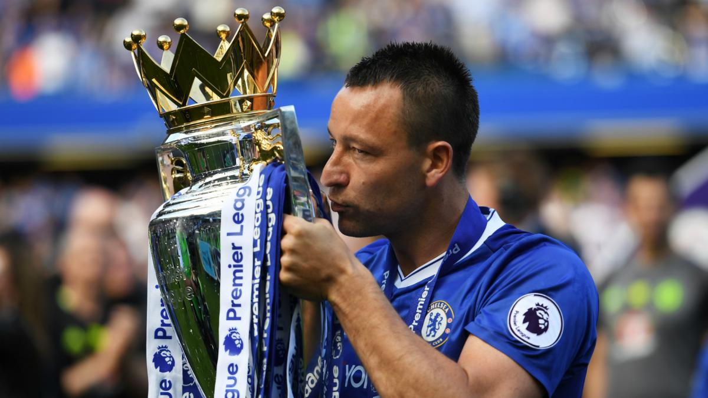

John George Terry (born 7 December 1980) is an English professional football coach and former player who played as a centre-back. He was previously captain of Chelsea, the England national team and Aston Villa. He was most recently the assistant head coach at the latter. Regarded as one of the best defenders in the world at his peak, he is considered to be one of the greatest central defenders of his generation, as well as one of the best English and Premier League defenders ever. Terry was named UEFA Club Defender of the Year in 2005, 2008 and 2009, PFA Players' Player of the Year in 2005, and was included in the FIFPro World XI for five consecutive seasons, from 2005 to 2009. He was also named in the all-star squad for the 2006 FIFA World Cup, the only English player to make the team. Terry is Chelsea's most successful captain, during his 19 years with the club, he led them to five Premier League titles, four FA Cups, three League Cups, one UEFA Europa League and one UEFA Champions League title. He is one of five players to have made over 500 appearances for Chelsea and is also the club's all-time highest scoring defender. In 2007, he became the first captain to lift the FA Cup at the new Wembley Stadium in Chelsea's 1–0 win over Manchester United, and also the first player to score an international goal there, scoring a header in England's 1–1 draw with Brazil. In his final season at Chelsea in 2017, he became the first ever player to captain a team to the Premier League title on five occasions.
